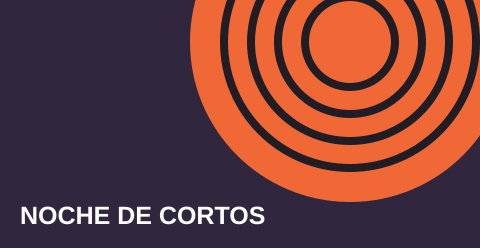
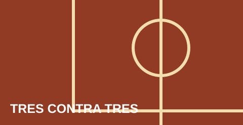

Cuatro notas
Una secuencia original de tonos marca el pulso para una cortina audiovisual.
Me gusta llevar el ritmo de la cancha a la pantalla. Para este portafolio elegí dos ideas que se pueden contar en pocos segundos.

Un afiche para una función de cortometrajes. Los círculos concéntricos recuerdan la luz que sale del proyector.
Ilustración vectorial · SVG
Una invitación a un torneo de básquet. Las líneas de la cancha organizan el espacio para el título.
Ilustración vectorial · SVGUna secuencia original de tonos marca el pulso para una cortina audiovisual.
Estudio de ritmo visual con un disco que rebota sobre una trama de color.